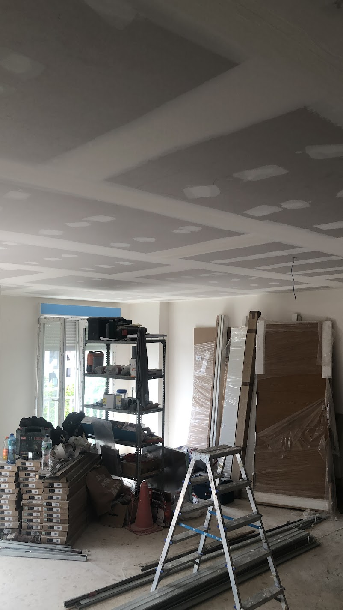
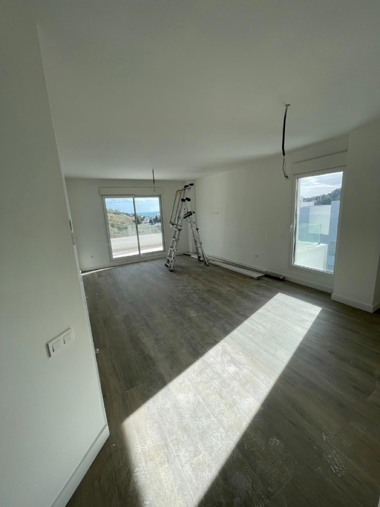
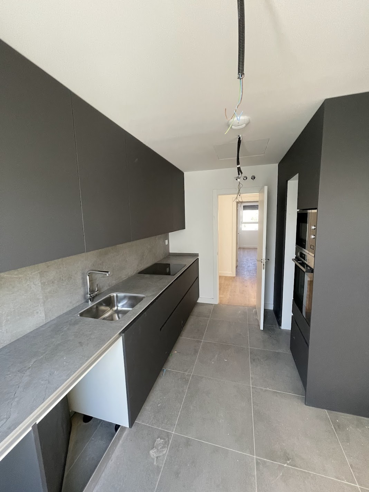
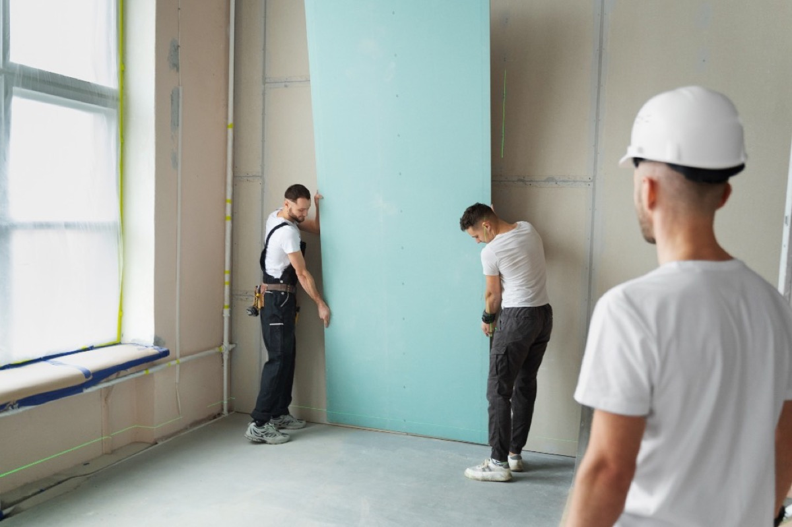

Precio de un falso techo de placas de yeso con LED, por m² y sin rodeos
Soy Asis. Desde 2012 montando falsos techos de placa de yeso laminado en Granada y en la costa. Es lo que más me piden últimamente y entiendo por qué — cuando lo ves terminado, con la luz saliendo del foseado, no te lo esperas. Aquí te dejo los precios de verdad, lo que incluyen y lo que no.

Estructura de un falso techo en Granada — así queda antes de placar y de dejar el hueco para la tira LED
¿Cuánto cuesta un falso techo de placas de yeso con LED?
Estos son mis precios por metro cuadrado. Te digo el precio y ese es el que cobro: sin extras que aparecen a mitad de obra.
| Trabajo | Precio | Qué llevas por ese precio |
|---|---|---|
| Falso techo de placas de yeso liso sin iluminación integrada |
desde 30 €/m² | Perfilería, placa, tornillería, tratamiento de juntas, lijado y techo listo para pintar. |
| Falso techo con LED integrado foseado perimetral o focos empotrados |
desde 50 €/m² | Todo lo anterior más el foseado o los huecos de los focos, la tira LED, la fuente y la conexión dejada funcionando. |
| Tabique de placas de yeso simple | 25 €/m² | Por si aprovechas la obra para cerrar un hueco o hacer un vestidor. |
| Tabique de placas de yeso doble con aislamiento dentro |
35 €/m² | El que uso cuando se busca aislar del ruido de la escalera o del vecino. |
| Trampilla de registro | incluida | Siempre va incluida. Sin registro no te dejo un techo con LED, y luego te explico por qué. |
| Visita y presupuesto | gratis | Voy, mido, miro la altura y las instalaciones, y te paso el precio cerrado por escrito. |
Precios de PintaReformas para Granada capital, cinturón y costa. El «desde» no es un gancho: es el precio de un techo normal, bien ejecutado. Si tu caso se sale de lo normal te lo digo en la visita y te explico por qué.
¿Quieres el número exacto de tu techo? Mándame por WhatsApp los metros del salón y una foto del techo actual. Te contesto yo mismo, no un comercial.
Qué entra en el precio y qué va aparte
Casi todos los sustos en un presupuesto vienen de aquí. Prefiero dejarlo escrito antes de empezar.
Sí va incluido
- Perfilería de acero, cuelgues y tornillería.
- Placa de yeso laminado (hidrófuga en baño y cocina, sin cobrarte un extra por decidirlo bien).
- Cinta y masilla en todas las juntas, a tres manos.
- Lijado fino y el techo listo para pintar.
- El foseado o los huecos de los focos, ya replanteados contigo.
- Tira LED, perfil, fuente de alimentación y conexión funcionando.
- Trampilla de registro para llegar a la fuente.
- Recogida de escombro y la casa barrida al terminar.
- Precio cerrado por escrito y factura.
Esto va aparte (y te lo digo antes)
- La pintura del techo. Si quieres, te la meto en el mismo presupuesto y sale mejor.
- Mover puntos de luz o hacer una instalación eléctrica nueva desde el cuadro.
- Focos de gama alta o tiras RGB con mando, si los quieres de una marca concreta.
- Tirar un techo de escayola viejo, si lo hay: eso es demolición y se presupuesta.
- Andamio, cuando el techo pasa de 3,5 m de altura.
- Molduras decorativas de escayola o poliestireno, si las pides.
Qué hace que el precio suba o baje
Dos salones del mismo tamaño pueden costar distinto, y no es capricho. Estos son los factores que de verdad mueven el precio.
Los metros totales
Cuantos más metros seguidos, mejor precio por m². Montar en un salón de 25 m² sale más barato por metro que en un pasillo de 6 m², porque el tiempo de preparar la obra es el mismo.
La altura del techo
Hasta 2,80 m se trabaja con borriquetas y es lo normal. Por encima de 3,5 m hace falta andamio, se tarda más y eso se nota en el precio.
El tipo de LED
Una tira lineal en un foseado recto es lo más económico. Focos empotrados uno a uno, tira RGB con mando o dobles niveles de luz suben el precio del metro.
Registros y trampillas
Uno va incluido. Si el techo esconde llaves de paso, desagües o varias fuentes, hacen falta más registros y cada uno lleva su trabajo.
La forma del techo
Un rectángulo limpio es rápido. Vigas que sortear, curvas, dos niveles o una isla central en el medio del salón multiplican los cortes y el tiempo de masilla.
Placa hidrófuga
En baños y cocinas uso la placa verde, que aguanta el vapor. Cuesta algo más que la normal, pero en un baño no hay discusión: va hidrófuga.
Qué hay ahora arriba
Si hay que quitar un techo de escayola viejo o el forjado está muy irregular, hay trabajo previo. Lo veo en la visita y te lo digo antes, no después.
Dónde está la casa
Granada capital y cinturón, precio de tabla. En Motril, Almuñécar, Nerja o Marbella depende del volumen de obra; en trabajos pequeños muy lejos a veces no te compensa y prefiero decírtelo.
Un ejemplo con números, para que te hagas la idea
Salón de 20 m² en un piso de Granada, techo rectangular, altura normal de 2,60 m. Falso techo completo con foseado perimetral y tira LED cálida alrededor, un registro en la esquina del pasillo.
20 m² × 50 €/m² =1.000 €Ahí va todo montado y con la luz funcionando. Si lo quieres pintado, hablamos y te lo sumo al presupuesto. Y si prefieres el techo liso sin luz, ese mismo salón sale por 600 € (20 m² × 30 €/m²).
Es un ejemplo orientativo, no un presupuesto. El tuyo lo hago después de verlo, gratis, y te lo doy cerrado por escrito.
Qué falso techo te conviene según la habitación
No todos los techos hacen falta. Te cuento qué es cada uno y para qué lo suelo usar.
1. Falso techo liso
El de toda la vida: una superficie plana y limpia que tapa cables, tubos de aire acondicionado o un forjado feo. Sin luz integrada. Es la base de todo lo demás y el más económico. Perfecto para pasillos, dormitorios y para nivelar techos irregulares.
2. Con foseado o garganta para tira LED
Es el que más me piden. Se deja un canal perimetral escondido y dentro va la tira LED, que ilumina hacia arriba y rebota en el techo. No ves la bombilla, ves la luz. En un salón cambia por completo cómo se siente la habitación por la noche.
3. Con focos empotrados
Focos LED redondos o cuadrados embutidos en la placa. Luz directa y potente donde la necesitas: encima de la encimera, del sofá o de la mesa. Lo suelo combinar con el foseado — focos para ver, tira LED para el ambiente.
4. Con registro (trampilla)
No es un tipo de techo aparte, es una obligación. Una trampilla disimulada por donde llegar a la fuente del LED, a una llave de paso o a un desagüe. La coloco en un sitio discreto y del mismo acabado que el techo.
5. En baño y cocina
Mismo trabajo pero con placa hidrófuga (la verde), que aguanta el vapor de la ducha y de los fogones sin pandearse. Con placa normal, en un baño acabas viendo manchas y bordes hinchados al año o dos. Aquí no hay atajo que valga.
6. Acústico
Cuando el problema es el ruido del vecino de arriba o de un local. Va con lana mineral entre el forjado y la placa, cuelgues antivibratorios y a veces doble placa. No hace milagros, pero se nota mucho. Este siempre lo presupuesto tras verlo.
Paso a paso, y cuánto se tarda de verdad
Tiempos reales de un salón de unos 20 m². Los secados no se pueden acelerar, y quien los salta deja grietas al mes.
Replanteo contigo 1 hora
Marcamos la altura del techo nuevo y por dónde va el foseado y cada foco. Lo dibujo en la pared con lápiz para que lo veas antes de que sea irreversible. Aquí es donde se decide si el resultado te va a gustar.
Perfilería y cuelgues 1 día
Perfil perimetral nivelado con láser y estructura de maestras colgada del forjado. Si la estructura no está a nivel, ninguna masilla lo arregla después. Es la parte que nadie ve y la que sostiene todo.
Paso de cables medio día
Antes de cerrar, dejo pasados los cables de la tira y de cada foco, y decidido dónde queda la fuente de alimentación — siempre en un punto al que pueda llegar por el registro.
Placado 1 día
Se atornillan las placas, se cortan los huecos de focos y se monta el foseado. Al terminar el día ya se ve la forma del techo y es cuando el cliente empieza a emocionarse.
Juntas y masilla 2-3 días
Cinta y tres manos de masilla, cada una con su secado. Este es el paso que separa un techo bien hecho de uno donde se ven las juntas cuando entra el sol de lado. No se puede correr aquí.
Lijado y limpieza medio día
Lijado fino con aspiración. Aviso: el lijado de la masilla hace polvo, aunque protejo muebles y suelo. Reviso el techo con una luz rasante para cazar cualquier imperfección antes de darlo por bueno.
Montaje del LED y prueba medio día
Tira en su perfil, fuente conectada y encendemos. Lo probamos juntos de noche, que es cuando de verdad se ve. Si algo no te convence, se ajusta antes de que me vaya.
Pintura, si la quieres 1 día
Imprimación y dos manos de plástico mate. Va aparte del precio del techo, pero si ya estoy en casa con todo montado te sale mejor que llamar a otro pintor después.
Total de un salón de 20 m²: entre 5 y 7 días, y un día más si lo pinto. Puedes seguir viviendo en casa: trabajo por zonas y recojo cada tarde.
Lo bueno y lo que no te cuentan
Prefiero que sepas las pegas antes de firmar. Si después de leerlas sigues queriéndolo, es que lo quieres de verdad.
Lo bueno
- La luz indirecta del foseado cambia por completo cómo se siente una habitación por la noche. Es el motivo número uno por el que la gente lo pide.
- Tapa de golpe cables, tubos de aire acondicionado, vigas y un forjado con desniveles. Queda una superficie perfecta.
- El LED consume poquísimo y dura años, así que la luz de ambiente la puedes tener encendida sin mirar el contador.
- Puedes tener dos ambientes en la misma habitación: focos para trabajar o comer, tira LED para ver una película.
- Con lana mineral dentro se gana bastante contra el ruido del piso de arriba.
- Es un trabajo limpio y reversible: si algún día quieres cambiarlo, se desmonta sin tocar el forjado.
Lo que tienes que saber antes
- Pierdes altura: entre 8 y 10 cm en un techo liso, y de 12 a 15 cm donde va el foseado. Si tu casa tiene 2,40 m, te lo diré claramente en la visita.
- Hay que dejar registro sí o sí. Una trampilla se ve, aunque la ponga en el sitio más discreto posible. Sin ella, cambiar una fuente estropeada significa romper el techo.
- La fuente de alimentación es la pieza que más falla, no la tira. Por eso insisto tanto con el registro.
- No es un trabajo de un día. Entre secados de masilla y lijado, cuenta una semana larga en un salón.
- El lijado hace polvo fino que se mete por todas partes. Protejo lo que puedo, pero conviene vaciar la habitación.
- Si la tira LED es barata, al par de años tendrás tramos con distinto tono. Ahí no merece la pena ahorrar 40 €.
- En una habitación pequeña y ya oscura, un falso techo bajo puede agobiar. A veces recomiendo hacer solo el perímetro.
El salón es donde más se nota
Si solo vas a hacer una habitación, hazla en el salón. Es donde pasas las tardes y donde el foseado con tira LED tiene más sentido: la luz sube, rebota en el techo y baja repartida por toda la habitación, sin sombras duras ni ese punto de luz en el centro que aplasta el ambiente.
Lo que más funciona en un salón normal de Granada: foseado perimetral con tira LED cálida de 3000K y tres o cuatro focos empotrados sobre la zona del sofá o de la mesa. Dos interruptores, dos ambientes. Cuando llega la noche enciendes solo la tira y la habitación parece otra.
Si el salón es alargado, o hay una viga cruzando, se puede aprovechar: hago dos niveles y la viga deja de ser un problema para convertirse en la línea que separa el comedor de la zona de estar. Eso lo vemos en la visita, con el metro en la mano.
Un salón de 20 m² con foseado y LED sale desde 1.000 € (20 m² × 50 €/m²), montado y funcionando.


Aquí la placa importa más que el diseño
En un baño o en una cocina el falso techo tiene que aguantar vapor todos los días. Por eso uso placa hidrófuga, la verde, que está tratada para no absorber humedad. Con placa normal el techo aguanta un año o dos y luego empieza con manchas y bordes hinchados junto a la ducha. Lo he visto muchas veces reparando trabajos de otros.
En cocina lo típico son focos empotrados sobre la encimera — donde de verdad necesitas ver lo que cortas — y una tira LED escondida bajo el borde del techo si quieres luz de ambiente para cuando terminas de cenar. En baño, focos de bajo perfil y, si el espacio da, un foseado sobre el mueble del lavabo.
Dos cosas que siempre dejo resueltas: el registro cerca del extractor, para no tener que abrir el techo si algún día falla, y la ventilación bien pasada por encima. Y ojo con la humedad de origen: si en tu baño hay manchas por una filtración, primero se arregla eso — te lo cuento en pintura antihumedad en baños y en reparación de humedades. Taparlo con una placa no lo cura, solo lo esconde.
Si vas a reformar la cocina entera, échale un vistazo a lo que hago en placas de yeso en cocinas.
Qué LED poner dentro del techo
Aquí es donde la gente se pierde y donde más se ahorra mal. Te lo resumo en cuatro decisiones.
24 V mejor que 12 V
En tiradas largas, como el perímetro de un salón, la tira de 12 V pierde intensidad según se aleja de la fuente y se nota a simple vista. Con 24 V el color se mantiene parejo de punta a punta.
3000K en salón, 4000K en cocina
Cálido (3000K) para salón y dormitorio, que es donde quieres estar a gusto. Neutro (4000K) para cocina y baño, donde necesitas ver bien. Lo que nunca hago: mezclar temperaturas en la misma habitación.
RGB, solo si la vas a usar
La tira de colores con mando está bien y a los niños les encanta. Pero te aviso: en un salón, el 90 % del tiempo la vas a tener en blanco cálido. Si la quieres, la pongo; si dudas, ahorra ahí.
La fuente, accesible
Es la pieza que falla, no la tira. Va siempre en un punto al que se llega por el registro, nunca enterrada en el centro del techo. Un techo con la fuente inaccesible es un techo mal hecho.
Falsos techos con LED en Granada y en la costa
Voy a ver la obra y hago el presupuesto sin coste en toda esta zona.
En Granada capital y cinturón trabajo prácticamente cada semana. En la costa depende del volumen: para un salón completo o una vivienda entera voy sin problema; si es un trabajo pequeño y muy lejos, te lo digo honestamente antes de que pierdas el tiempo. Más sobre lo que hago en pintura y placas de yeso en Granada y en placas de yeso en la costa de Málaga.

Falso techo terminado en Motril — el mismo trabajo que hago en Granada, en la costa
Lo que me preguntáis por WhatsApp
Respuestas cortas, las mismas que doy por teléfono.
¿Cuánto cuesta un falso techo con LED por m²?
Un falso techo de placas de yeso con LED integrado sale desde 50 €/m², y uno liso sin iluminación desde 30 €/m². Ahí va todo: perfilería, placa, tratamiento de juntas, lijado, el foseado para la tira y la conexión del LED. El precio final depende de la altura, de los metros y de cuántos registros haya que dejar. Yo lo veo, te doy un precio cerrado y ese es el que cobro.
¿La pintura del techo va incluida en el precio?
No, la pintura va aparte porque no todo el mundo la quiere en el mismo momento. El techo te lo dejo lijado y listo para pintar. Si quieres que lo pinte yo, te lo meto en el mismo presupuesto y sale mejor que llamar a otro después, porque ya estoy en casa con todo montado.
¿Cuánta altura se pierde con un falso techo con LED?
Con un falso techo liso se pierden entre 8 y 10 cm. Si lleva foseado para la tira LED o focos empotrados, cuenta entre 12 y 15 cm en la zona del foseado. Si tu casa tiene 2,40 m de altura te lo digo claro antes de empezar: a veces compensa más hacer solo el perímetro y dejar el centro del techo como está.
¿Cuánto se tarda en hacer un falso techo con LED en un salón?
Un salón normal de unos 20 m² me lleva entre 5 y 7 días de trabajo. Dos días de estructura y placa, dos o tres de juntas y lijado con sus secados, y el último día el LED y los remates. Si además lo pinto, suma un día más. No es un trabajo de una tarde y quien te diga lo contrario te lo va a dejar con grietas.
¿Hace falta dejar un registro en el falso techo?
Sí, y es innegociable. La fuente de alimentación de la tira LED se puede estropear y tiene que poder cambiarse sin romper el techo. Dejo una trampilla de registro en un sitio discreto, normalmente en un pasillo o dentro de un armario. Un techo sin registro es un problema esperando a pasar.
¿Qué tira de LED es mejor para un falso techo?
Para casa, tira de 24 V con buen reproductor de color antes que la barata de 12 V: en tiradas largas la de 12 V pierde luz según se aleja de la fuente y se nota. En temperatura, 3000K cálido para salón y dormitorio, y 4000K neutro para cocina y baño. La RGB de colores está bien si te apetece, pero en un salón el 90 % del tiempo la vas a tener en blanco cálido.
¿Se puede poner falso techo de placas de yeso en un baño o una cocina?
Sí, pero con placa hidrófuga, la verde, no con la placa normal. Aguanta la humedad del vapor de la ducha y de los fogones sin pandearse. En baño además dejo el registro cerca del punto donde suele estar el extractor, para no tener que abrir después. Con placa normal en un baño acabas con manchas al año o dos.
¿Trabajas en Granada capital y también en la costa?
Sí. Trabajo en Granada capital y el cinturón (Armilla, La Zubia, Maracena), en la costa de Granada (Motril, Almuñécar, Salobreña) y en la costa de Málaga (Nerja, Marbella, Benalmádena, Torremolinos y Fuengirola). La visita y el presupuesto son gratis en toda esa zona.
¿Te hago el presupuesto de tu techo?
Mándame los metros y una foto del techo por WhatsApp y te digo lo que cuesta. Precio cerrado por escrito, factura y sin sorpresas al final.
Te puede interesar: Placas de yeso en Granada · Placas de yeso en cocinas · Placas de yeso Costa de Málaga · Quitar Gotelé · Precio Pintar Piso · Pintor en Granada
¿Y cuánto me costaría a mí?
Calcula el precio de pintar o reformar tu casa en 2 minutos — sin compromiso y sin que nadie te llame.
Calcular precio gratis →